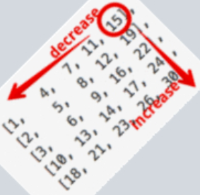
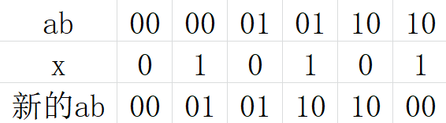

1. 高频主题
1.1. 双指针
1.1.1. [11] 盛水最多的容器

xxxxxxxxxx111class Solution:2 def maxArea(self, height: list[int]) -> int:3 l, r = 0, len(height) - 14 ans = 05 while l < r:6 ans = max(ans, (r - l) * min(height[l], height[r]))7 if height[l] < height[r]:8 l += 19 else:10 r -= 111 return ans1.1.2. [287] 寻找重复的数
长度为n + 1的数组，元素都在[1, n]范围内，其中只有一个数出现了不只一次，找出这个重复出现的数。要求空间复杂度为O(1)
1.1.2.1. 双指针查找链表中的环
将[0, n]构成图的n + 1个顶点，每个位置i及其元素arr[i]构成图的n + 1条边，由于n + 1个顶点组成的树中最多只能有n个顶点，因此该图中必定有环。当数组中出现重复的元素时，会有两个其它元素指向它，因此该元素即为环的起点，题目就变成了找出图(或者说是链表)中环的起点位置。由于数组中一定不存在0，因此0是图的其中一个起点

策略：使用快慢指针，快指针每次移动两个位置。当两个指针相遇时，将快指针回到起点并且也变成慢指针，最后两个指针会在环的起始位置相遇。时间复杂度为O(n)
证明：设起点到环的起始位置距离为a，环的起始位置到第一次相遇位置的距离为b，第一次相遇位置到环的起始位置的距离为c，环的周长为L = b + c。当第一次相遇时，慢指针走了a + b，快指针则走了2(a + b) = a + b + kL，整理得a = (k-1)L + c。因此当一个指针走了距离a到达环入口时，另一个指针从第一次相遇的位置出发绕k - 1圈再走距离c也会到达环的入口
xxxxxxxxxx91class Solution:2 def findDuplicate(self, nums: list[int]) -> int:3 slow, fast = nums[0], nums[nums[0]]4 while slow != fast:5 slow, fast = nums[slow], nums[nums[fast]]6 fast = 07 while slow != fast:8 slow, fast = nums[slow], nums[fast]9 return slow1.1.2.2. 计数法
用cnt[i]表示数组中小于等于i的元素个数，假设目标元素为target，当i < target时有cnt[i] <= i，当i >= target时有cnt[i] > i，因此可以用二分法找到满足cnt[i] > i的最大i。时间复杂度为O(nlogn)
xxxxxxxxxx131class Solution:2 def findDuplicate(self, nums: list[int]) -> int:3 left, right = 0, len(nums) - 14 while left <= right:5 mid = (left + right) // 26 cnt = 07 for x in nums:8 cnt += x <= mid9 if cnt > mid:10 right = mid - 111 else:12 left = mid + 113 return left1.1.2.3. 比特位计数法
统计数组中二进制的每一位出现1的个数a，再统计[1, n]中二进制的每一位出现1的个数b，当target的某一位为1时有a > b，为0时有a <= b，因此可以计算出target的每一个二进制位
xxxxxxxxxx161class Solution:2 def findDuplicate(self, nums: list[int]) -> int:3 n = len(nums)4 max_bit = 15 while (n - 1) >> max_bit:6 max_bit += 17 ans = 08 for bit in range(max_bit):9 a, b = 0, 010 for x in nums:11 a += (x & (1 << bit)) > 012 for i in range(1, n):13 b += (i & (1 << bit)) > 014 if a > b:15 ans |= 1 << bit16 return ans1.2. 哈希表
1.2.1. [128] 最长的连续序列
给定一个整数数组，求其中的所有元素能组成的最长连续序列。要求时间复杂度为O(n)
很容易想到排序后再遍历，但要求时间复杂度为O(n)就应该用空间换取时间，可考虑使用哈希表，唯一的难点就是整数范围太大即使遍历一遍也会超时。可以只保存出现过的数，遍历数组的时候用当前的数x减1判断是否为连续序列的起始位置
xxxxxxxxxx121class Solution:2 def longestConsecutive(self, nums: list[int]) -> int:3 nums = set(nums)4 ans = 05 for x in nums:6 if x - 1 not in nums:7 cur_len = 08 while x in nums:9 cur_len += 110 x += 111 ans = max(ans, cur_len)12 return ans1.3. 二分查找
1.3.1. [4] 两个有序数组的中位数
寻找中位数对两个有序数组的切分点i和j，由于两个数组左半部分总的长度必定是整个数组长度的一半，故j可以由i直接计算得到。可以通过二分法确定i的值
xxxxxxxxxx201class Solution:2 def findMedianSortedArrays(self, nums1: list[int], nums2: list[int]) -> float:3 n, m = len(nums1), len(nums2)4 if n > m:5 # 确保 n <= m 后面就不需要考虑越界了6 return self.findMedianSortedArrays(nums2, nums1)7 left, right = 0, n8 while left <= right:9 i = (left + right) // 210 j = (m + n + 1) // 2 - i11 if i != 0 and j != m and nums1[i - 1] > nums2[j]:12 right = i - 113 elif i != n and j != 0 and nums1[i] < nums2[j - 1]:14 left = i + 115 else:16 small = nums1[i - 1] if j == 0 else nums2[j - 1] if i == 0 else max(nums1[i - 1], nums2[j - 1])17 if (n + m) % 2 == 1:18 return small19 big = nums1[i] if j == m else nums2[j] if i == n else min(nums1[i], nums2[j])20 return (small + big) / 21.3.2. [33] 旋转有序数组中的查找
一个不含重复元素的有序数组先经过了一定位移的旋转，在该旋转有序数组中查找某个元素的索引
- 正常的二分查找只需要判断
target和mid的大小关系，是因为left默认是最小的而right默认是最大的 - 数组经过旋转后
mid会将数组划分为有序和旋转有序两部分，判断target的走向进行二分
xxxxxxxxxx181class Solution:2 def search(self, nums: list[int], target: int) -> int:3 left, right = 0, len(nums) - 14 while left <= right:5 mid = (left + right) // 26 if target == nums[mid]:7 return mid8 if nums[mid] < nums[left]:9 if nums[mid] < target < nums[left]:10 left = mid + 111 else:12 right = mid - 113 else:14 if nums[left] <= target <= nums[mid]:15 right = mid - 116 else:17 left = mid + 118 return -11.3.2.1. [81] 数组中含有重复元素
只需要将right从数组尾部第一个与0索引元素不相等的地方开始查找即可
xxxxxxxxxx21while right > 0 and nums[right - 1] == nums[right]:2 right -= 11.3.3. [240] 二维有序数组中的查找
二维数组中的元素每行是升序的、每列也是升序的，查找某个元素是否在这个二维数组中
如果从左上角开始查找，由于向右或是向下都是递增的方向，因此无法确定后序的搜索范围。而如果从右上角开始查找，那么向左是递减的方向、向下是递增的方向。将二维数组逆时针旋转45°可以看到它很像以右上角为根的一棵二叉搜索树

xxxxxxxxxx121class Solution:2 def searchMatrix(self, matrix: list[list[int]], target: int) -> bool:3 m, n = len(matrix), len(matrix[0])4 row, col = 0, n - 15 while row < m and col >= 0:6 if target == matrix[row][col]:7 return True8 if target < matrix[row][col]:9 col -= 110 else:11 row += 112 return False1.3.4. [215] 查找第k大的元素
查找无序数组中第k大的元素
借鉴快速排序的思想，每次划分时若刚好在第k个位置则直接返回，如果小于第k个位置则在后半段找，否则在前半段找
x1import random23class Solution:4 def findKthLargest(self, nums: list[int], k: int) -> int:5 n = len(nums)6 pivot = random.randint(0, n - 1)7 nums[0], nums[pivot] = nums[pivot], nums[0]8 pivot = nums[0]9 left, right = 0, n - 110 while left < right:11 while left < right and nums[right] < pivot:12 right -= 113 nums[left] = nums[right]14 while left < right and nums[left] >= pivot:15 left += 116 nums[right] = nums[left]17 nums[left] = pivot18 if left == k - 1:19 return nums[left]20 if left > k - 1:21 return self.findKthLargest(nums[:left], k)22 else:23 return self.findKthLargest(nums[left + 1:], k - left - 1)1.3.4.1. [347] 出现最多的k个数
先用哈希表统计每个数出现的次数，然后找出次数最大的k个元素。查找k个最大的元素和查找第k大的元素很类似
xxxxxxxxxx311import random234class Solution:5 def topKFrequent(self, nums: list[int], k: int) -> list[int]:6 def select(cnt: list[tuple[int, int]], k: int) -> list[int]:7 n = len(cnt)8 pivot = random.randint(0, n - 1)9 cnt[0], cnt[pivot] = cnt[pivot], cnt[0]10 pivot = cnt[0]11 left, right = 0, n - 112 while left < right:13 while left < right and cnt[right][1] < pivot[1]:14 right -= 115 cnt[left] = cnt[right]16 while left < right and cnt[left][1] >= pivot[1]:17 left += 118 cnt[right] = cnt[left]19 cnt[left] = pivot20 if left == k - 1:21 return [x[0] for x in cnt[:k]]22 if left > k - 1:23 return select(cnt[:left], k)24 else:25 return [x[0] for x in cnt[:left + 1]] + select(cnt[left + 1:], k - left - 1)2627 cnt = {}28 for x in nums:29 cnt[x] = cnt.get(x, 0) + 130 cnt = list(cnt.items())31 return select(cnt, k)1.4. 栈与队列
1.4.1. [32] 最长合法括号串
有一个由(和)组成的字符串，找出其中最长的合法的括号串长度
1.4.1.1. 栈
栈顶始终记录当前合法括号串的前一个位置，初始值为-1
- 遇到
(时当前位置入栈 - 遇到
)时先出栈，如果栈为空则当前位置入栈；否则用当前位置减去栈顶位置更新结果
xxxxxxxxxx141class Solution:2 def longestValidParentheses(self, s: str) -> int:3 stack = [-1]4 ans = 05 for i in range(len(s)):6 if s[i] == '(':7 stack.append(i)8 else:9 stack.pop()10 if stack:11 ans = max(ans, i - stack[-1])12 else:13 stack.append(i)14 return ans1.4.1.2. 计数法
- 从左往右统计
(和)出现的次数为left和right，当left == right时更新结果，当left < right时重置left和right - 从右往左再遍历一遍
xxxxxxxxxx151class Solution:2 def longestValidParentheses(self, s: str) -> int:3 ans = 04 for start in [0, -1]:5 left, right = 0, 06 for c in s[start::start * 2 + 1]:7 if c == '(':8 left += 19 else:10 right += 111 if left == right:12 ans = max(ans, left + right)13 elif (start == -1) ^ (left < right):14 left = right = 015 return ans1.4.1.3. DP
dp[i]表示以s[i]为结尾的最长合法括号串的长度，当s[i] == '('时dp[i]必为0，因此只需要更新当s[i] == ')'时的值
当
s[i-1] == '('时，s[i-1]与s[i]组成()，则dp[i] = dp[i-2] + 2当
s[i-1] == ')'时，如果s[i-dp[i-1]-1] == '('，则dp[i] = dp[i-1] + 2 + dp[i-dp[i-1]-2]实际上情况1是情况2的特例
xxxxxxxxxx71class Solution:2 def longestValidParentheses(self, s: str) -> int:3 dp = [0] * len(s)4 for i in range(1, len(s)):5 if s[i] == ')' and i > dp[i - 1] and s[i - dp[i - 1] - 1] == '(':6 dp[i] = dp[i - 1] + 2 + dp[i - dp[i - 1] - 2]7 return max(dp) if dp else 01.4.2. [42] 可以盛多少水

1.4.2.1. 单调栈
递减栈。累加的水量是按高度层而不是按位置统计的，高度层是以弹出位置高度为起点到左右两边更低点为终点的那个高度区间
xxxxxxxxxx111class Solution:2 def trap(self, height: list[int]) -> int:3 stack = []4 ans = 05 for i in range(len(height)):6 while stack and height[i] >= height[stack[-1]]:7 cur = stack.pop()8 if stack:9 ans += (i - stack[-1] - 1) * (min(height[stack[-1]], height[i]) - height[cur])10 stack.append(i)11 return ans1.4.2.2. 双指针
记录左右指针当前遍历到的最大值，移动最大值较小的那一边的指针，当前位置最多能盛水到更小的那个最大值。即某个位置的盛水量是由左右两边最大值的更小者决定的
xxxxxxxxxx151class Solution:2 def trap(self, height: list[int]) -> int:3 max_left, max_right = 0, 04 left, right = 0, len(height) - 15 ans = 06 while left <= right:7 if max_left < max_right:8 max_left = max(max_left, height[left])9 ans += max_left - height[left]10 left += 111 else:12 max_right = max(max_right, height[right])13 ans += max_right - height[right]14 right -= 115 return ans1.4.2.3. [407] 二维的情况

一个位置盛水后的高度，是由周围4个位置盛水后高度的最小值min_height与当前位置高度height的更大者决定的。最外围的位置盛水后高度就是其本身的高度，可以首先将它们记录在小顶堆中，然后不断找出盛水后高度最小的位置，就可以确定与其相邻位置的盛水后高度
xxxxxxxxxx261import heapq23class Solution:4 def trapRainWater(self, heightMap: list[list[int]]) -> int:5 m, n = len(heightMap), len(heightMap[0])6 if m < 2 or n < 2:7 return 08 water = []9 visited = [[False] * n for _ in range(m)]10 for i in range(m):11 for j in range(n):12 if i in [0, m - 1] or j in [0, n - 1]:13 heapq.heappush(water, (heightMap[i][j], i, j))14 visited[i][j] = True15 ans = 016 direct = [[-1, 0], [1, 0], [0, -1], [0, 1]]17 while water:18 min_height, min_x, min_y = heapq.heappop(water)19 for x, y in direct:20 cur_x, cur_y = min_x + x, min_y + y21 if 0 <= cur_x < m and 0 <= cur_y + y < n and not visited[cur_x][cur_y]:22 cur_height = max(heightMap[cur_x][cur_y], min_height)23 heapq.heappush(water, (cur_height, cur_x, cur_y))24 visited[cur_x][cur_y] = True25 ans += cur_height - heightMap[cur_x][cur_y]26 return ans1.4.3. [84] 柱状图中的最大矩形

递增栈。每次弹出位置的高度即为左右两边之间的最低高度
xxxxxxxxxx121class Solution:2 def largestRectangleArea(self, heights: list[int]) -> int:3 # 注意要把栈中所有位置都遍历完4 heights.append(0)5 stack = []6 ans = 07 for i in range(len(heights)):8 while stack and heights[i] <= heights[stack[-1]]:9 cur = stack.pop()10 ans = max(ans, heights[cur] * (i - (stack[-1] if stack else -1) - 1))11 stack.append(i)12 return ans1.4.3.1. [85] 矩阵中的最大矩形
矩阵由0和1组成，求由1组成的最大矩形面积
- 解法一：可以以每一行为底构造出一个柱状图，然后套用上题的代码求出该柱状图的最大矩形，最后再选择出最大值的最大值
- 解法二：遍历每个位置，记录当前位置往上延伸的最大高度，然后以这个高度往左和往右延伸的最远距离，就可以求出以该高度的最大面积
xxxxxxxxxx221class Solution:2 def maximalRectangle(self, matrix: list[list[str]]) -> int:3 m, n = len(matrix), len(matrix[0])4 height, left, right = [0] * n, [0] * n, [n - 1] * n5 ans = 06 for i in range(m):7 leftmost, rightmost = 0, n - 18 for j in range(n):9 if matrix[i][j] == '1':10 height[j] += 111 left[j] = max(left[j], leftmost)12 else:13 height[j] = left[j] = 014 leftmost = j + 115 for j in range(n - 1, -1, -1):16 if matrix[i][j] == '1':17 right[j] = min(right[j], rightmost)18 else:19 right[j] = n - 120 rightmost = j - 121 ans = max(ans, height[j] * (right[j] - left[j] + 1))22 return ans1.5. 深/广度搜索
1.5.1. [437] 查找指定路径和的个数
给定一棵二叉树，统计其中路径和等于某个数target的路径个数。这里的路径只能向下，即不能跨越某个节点的左右子树
1.5.1.1. 深度优先搜索
对于以某个节点为根的子树来说，符合条件的路径有3种情况：一是路径包含该节点，二是路径完全在左子树中，三是路径完全在右子树中。后两种情况可以用递归的方式求解，而第一种情况中当前节点必是路径的起点，可以分别递归地求以左右子节点为起点目标和为targer - 当前节点值的路径个数
xxxxxxxxxx141class Solution:2 def pathSum(self, root: Optional[TreeNode], targetSum: int) -> int:3 def rootSum(root: TreeNode, target: int) -> int:4 if root is None:5 return 06 ans = 1 if root.val == target else 07 ans += rootSum(root.left, target - root.val)8 return ans + rootSum(root.right, target - root.val)910 if root is None:11 return 012 ans = rootSum(root, targetSum)13 ans += self.pathSum(root.left, targetSum)14 return ans + self.pathSum(root.right, targetSum)1.5.1.2. 前缀和
节点的前缀和为从根节点到当前节点的路径和。遍历时记录当前节点所有祖先的前缀和，则以该节点为结尾的路径和为target的个数为祖先中前缀和为当前节点前缀和 - target的个数
xxxxxxxxxx161class Solution:2 def pathSum(self, root: Optional[TreeNode], targetSum: int) -> int:3 def dfs(root: TreeNode, cur_sum: int) -> int:4 if root is None:5 return 06 cur_sum += root.val7 ans = pre_sum[cur_sum - targetSum]89 pre_sum[cur_sum] += 110 ans += dfs(root.left, cur_sum)11 ans += dfs(root.right, cur_sum)12 pre_sum[cur_sum] -= 113 return ans1415 pre_sum = defaultdict(int, {0: 1})16 return dfs(root, 0)1.6. 动态规划
1.6.1. [72] 两个字符串的编辑距离
给定两个字符串A和B，每次只能执行以下操作之一：增加一个字符、删除一个字符、替换一个字符。求将A变成B最少需要执行几次操作
记dp[i][j]为将A的前i个字符变为B的前j个字符所需的最少操作数，当A[i-1] == B[j-1]时dp[i][j] = dp[i-1][j-1]，否则dp[i][j] = min(dp[i-1][j-1], dp[i-1][j], dp[i][j-1]) + 1
xxxxxxxxxx111class Solution:2 def minDistance(self, word1: str, word2: str) -> int:3 m, n = len(word1), len(word2)4 dp = [i for i in range(n + 1)]5 for i in range(1, m + 1):6 pre, dp[0] = dp[0], i7 for j in range(1, n + 1):8 cur = dp[j]9 dp[j] = min(pre + (word1[i - 1] != word2[j - 1]), cur + 1, dp[j - 1] + 1)10 pre = cur11 return dp[n]1.6.2. [312] 戳爆气球得分最大
有一排写着数字的气球，每戳爆一个气球所得分数为当前数字与旁边两个数字的乘积(若越界则用数字1代替)，求最大可能得分
1.6.2.1. 记忆化搜索
按逆过程思考，不断地往里面加气球。记dfs(i, j)为往i好j之间加满气球的最大得分，则dfs(i,j) = max(dfs(i,k) + num[i]*num[k]*num[j] + dfs(k,j))，为了避免重复搜索，可以将已求出的结果记录下来
为了方便，在首尾都加上一个值为1的气球，且最开始就已经加好了
xxxxxxxxxx131from functools import lru_cache23class Solution:4 def maxCoins(self, nums: list[int]) -> int:5 (None) # 容量设置为None表示无限容量6 def dfs(left, right) -> int:7 ans = 08 for i in range(left + 1, right):9 ans = max(ans, dfs(left, i) + nums[left] * nums[i] * nums[right] + dfs(i, right))10 return ans1112 nums = [1] + nums + [1]13 return dfs(0, len(nums) - 1)1.6.2.2. 动态规划
上面是自上而下的搜索，也可以使用自下而上的动态规划方法。要注意搜索的顺序，保证求dp[i][j]之前所有的d[i][k]和dp[k][j]都已经求出来了
xxxxxxxxxx111class Solution:2 def maxCoins(self, nums: list[int]) -> int:3 nums = [1] + nums + [1]4 n = len(nums)5 dp = [[0] * n for _ in range(n)]6 for length in range(1, n - 1):7 for i in range(n - 1 - length):8 j = i + length + 19 for k in range(i + 1, j):10 dp[i][j] = max(dp[i][j], dp[i][k] + nums[i] * nums[k] * nums[j] + dp[k][j])11 return dp[0][n - 1]1.6.3. [416] 能否等分数组
有一个正整数数组，能否将其切分为两个数组使得它们的和相等
这是一个NP完全问题。可以将其转化为背包问题求解：即能否使用数组中的元素将容量为数组总和一半的背包填满。记dp[i][j]为前i个元素能否填满容量为j的背包，则dp[i][j] = dp[i-1][j] || dp[i-1][j-num[i]]
xxxxxxxxxx121class Solution:2 def canPartition(self, nums: list[int]) -> bool:3 n, m = len(nums), sum(nums)4 if m % 2:5 return False6 n, m = n + 1, m // 2 + 17 dp = [False] * m8 dp[0] = True9 for i in range(1, n):10 for j in range(m - 1, nums[i - 1] - 1, -1):11 dp[j] = dp[j] or dp[j - nums[i - 1]]12 return dp[-1]1.6.3.1. [494] 添加±组成目标
在数组中的每个元素前面加上+或-符号，使得表达式的值为target，求符合题意的方案数
记整个数组元素之和为sum，添加-的那些元素之和为neg，则添加+的元素之和为pos = sum-neg，表达式结果为pos - neg = (sum-neg) - neg = sum - 2*neg = target，得neg = (sum-target) / 2。因此题目转化成了求在数组中找到和为neg的方案数
1.7. 巧妙的设计
1.7.1. [73] 将二维数组置0
将二维数组中元素为0所在行和列都置为0，要求空间复杂度为O(1)
使用第一行和第一列来表示某一列和某一行是否存在0，由于(0, 0)位置比较特殊，可以用来表示第一行是否存在0，而第一列是否存在0则用单独一个变量来表示，这也是唯一的额外空间
xxxxxxxxxx141class Solution:2 def setZeroes(self, matrix: list[list[int]]) -> None:3 m, n = len(matrix), len(matrix[0])4 first_col = 15 for i in range(m):6 first_col = first_col * (matrix[i][0] != 0)7 for j in range(1, n):8 matrix[i][0] = matrix[i][0] * (matrix[i][j] != 0)9 matrix[0][j] = matrix[0][j] * (matrix[i][j] != 0)10 for i in range(m - 1, -1, -1):11 for j in range(1, n):12 matrix[i][j] *= (matrix[i][0] != 0) * (matrix[0][j] != 0)13 for i in range(m):14 matrix[i][0] *= (first_col != 0)
2. 系列进阶
2.1. 链表逆置
2.1.1. [206] 逆置整个链表
xxxxxxxxxx301class ListNode:2 def __init__(self, val=0, nxt=None):3 self.val = val4 self.next = nxt567class Solution:8 # 递归版9 def reverseList(self, head: ListNode) -> ListNode:10 # (head, tail)11 def reverse(head: ListNode) -> (ListNode, ListNode):12 if head is None or head.next is None:13 return head, head14 h, t = reverse(head.next)15 t.next = head16 head.next = None17 return h, head1819 return reverse(head)[0]2021 # 迭代版22 def reverseList(self, head: ListNode) -> ListNode:23 pre, cur = None, head24 while cur is not None:25 # 后半段的head26 nxt = cur.next27 cur.next = pre28 pre = cur29 cur = nxt30 return pre2.1.2. [92] 逆置链表某个区间
给定一个链表和起止位置left与right，逆置left与right之间(含)的部分
xxxxxxxxxx251class ListNode:2 def __init__(self, val=0, nxt=None):3 self.val = val4 self.next = nxt567class Solution:8 def reverseBetween(self, head: ListNode, left: int, right: int):9 # p1 p2 p3 p4分别是left-1 left right right+1位置，即两个断点前后的节点10 p1 = None11 for _ in range(left - 1):12 p1 = head if p1 is None else p1.next13 p2 = head if p1 is None else p1.next14 pre, cur = p1, p215 for _ in range(right - left + 1):16 nxt = cur.next17 cur.next = pre18 pre = cur19 cur = nxt20 p3, p4 = pre, cur21 p2.next = p422 if p1:23 p1.next = p324 return head25 return p32.1.3. [25] 分段逆置链表
给定一个链表和整数k，每k个一组逆置链表，最后如果剩余不到k个元素则保持其顺序不变
xxxxxxxxxx501class ListNode:2 def __init__(self, val=0, nxt=None):3 self.val = val4 self.next = nxt567class Solution:8 # 递归版9 def reverseKGroup(self, head: ListNode, k: int):10 tmp = head11 for _ in range(k):12 if tmp is None:13 break14 tmp = tmp.next15 else:16 pre, cur = self.reverseKGroup(tmp, k), head17 for _ in range(k):18 nxt = cur.next19 cur.next = pre20 pre = cur21 cur = nxt22 return pre23 return head2425 # 迭代版26 def reverseKGroup(self, head: ListNode, k: int):27 ans, pre_tail = None, None28 pre, cur = None, head29 going = True30 while going:31 tmp = cur32 for _ in range(k):33 if tmp is None:34 going = False35 pre = cur36 break37 tmp = tmp.next38 else:39 nxt_tail = cur40 for _ in range(k):41 nxt = cur.next42 cur.next = pre43 pre = cur44 cur = nxt45 if pre_tail is None:46 ans = pre47 else:48 pre_tail.next = pre49 pre_tail = nxt_tail50 return ans2.2. 跳跃游戏
2.2.1. [55] 能否到达终点
每个位置的数字表示最多能跳跃的步数，问从0出发是否能够到达终点
xxxxxxxxxx81class Solution:2 def canJump(self, nums: list[int]) -> bool:3 farest = 04 for i in range(len(nums)):5 if i > farest:6 return False7 farest = max(farest, i + nums[i])8 return True2.2.2. [45] 至少几步到达终点
每个位置的数字表示最多能跳跃的步数，问从0出发至少需要几步到达终点
dp[i]表示到达位置i所需的最少步数
xxxxxxxxxx91class Solution:2 def jump(self, nums: list[int]) -> int:3 n, farest = len(nums), 04 dp = [0] + [n] * (n - 1)5 for i in range(n):6 for j in range(farest, min(i + nums[i] + 1, n)):7 dp[j] = min(dp[j], dp[i] + 1)8 farest = max(farest, i + nums[i])9 return dp[n - 1]2.2.3. [1306] 只能跳到前后指定步数的两个位置
每个位置的数字表示向前或向后只能跳的步数，问是否能够到达其中一个数字为0的位置
将可以到达的位置记录在一个队列中，不断从队列中取出元素以抵达下一个位置并加入队列
xxxxxxxxxx151class Solution:2 def canReach(self, arr: list[int], start: int) -> bool:3 n = len(arr)4 q = [start]5 visited = [False] * n6 visited[start] = True7 while q:8 cur = q.pop()9 if arr[cur] == 0:10 return True11 for nxt in [cur - arr[cur], cur + arr[cur]]:12 if 0 <= nxt < n and not visited[nxt]:13 q.append(nxt)14 visited[nxt] = True15 return False2.2.4. [1345] 只能向前或向后跳一步或跳到值相等的位置
每个位置只能向前或向后跳一步，或者跳到与该位置值相等的另一个位置，问至少需要几步到达终点
使用BFS搜索到达所有位置所需的最少步数
xxxxxxxxxx221from queue import Queue23class Solution:4 def minJumps(self, arr: list[int]) -> int:5 n = len(arr)6 num2indices = {}7 for i in range(n):8 if arr[i] not in num2indices:9 num2indices[arr[i]] = []10 num2indices[arr[i]].append(i)11 q = Queue()12 q.put((0, 0))13 visited = [True] + [False] * (n - 1)14 while not q.empty():15 cur, step = q.get()16 if cur == n - 1:17 return step18 for nxt in [cur - 1, cur + 1] + num2indices[arr[cur]]:19 if 0 <= nxt < n and not visited[nxt]:20 q.put((nxt, step + 1))21 visited[nxt] = True22 num2indices[arr[cur]] = []2.2.5. [1340] 最多能到达多少个位置
在每个位置最多只能向前或向后跳跃d步，并且当前位置的数字要比当前位置与下一个位置(含)之间所有位置的数字都要大才能跳过去，从任一位置出发，问最多能到达多少个位置
记忆化搜索。遍历当前位置i左右两边d步以内的位置j，如果j尚未遍历则递归地遍历j，最后更新dp[i] = max(dp[i], dp[j]+1)
xxxxxxxxxx191class Solution:2 def maxJumps(self, arr: list[int], d: int) -> int:3 n = len(arr)4 dp = [0] * n56 def dfs(i):7 dp[i] = 18 for rge in [range(i - 1, max(i - d - 1, -1), -1), range(i + 1, min(i + d + 1, n))]:9 for j in rge:10 if arr[j] >= arr[i]:11 break12 if dp[j] == 0:13 dfs(j)14 dp[i] = max(dp[i], dp[j] + 1)1516 for i in range(n):17 if dp[i] == 0:18 dfs(i)19 return max(dp)2.2.6. [1696] 到达终点时最大得分
每个位置最多只能向前跳k步，将经过位置的得分累加，求到达终点时的最大得分
2.2.6.1. 动态规划 + 优先级队列
用大顶堆保存前面位置的(score, idx)对。遍历当前位置时，先不断移除idx超出距离k范围的堆顶元素，然后就可以计算到当前位置的最大得分，并加入到大顶堆中
xxxxxxxxxx171from queue import PriorityQueue23class Solution:4 def maxResult(self, nums: list[int], k: int) -> int:5 n = len(nums)6 ans = nums[0]7 q = PriorityQueue()8 q.put((-ans, 0))9 for i in range(1, n):10 while not q.empty():11 cur = q.get()12 if cur[1] >= i - k:13 q.put(cur)14 ans = nums[i] - cur[0]15 q.put((-ans, i))16 break17 return ans2.2.6.2. 动态规划 + 单调队列
用队列保存(score, idx)对，但需要保持队列的单调性——即score递减但idx递增。遍历当前位置时，先不断移除idx超出距离k范围的元素队首元素，然后就可以计算到当前位置的最大得分。将当前位置的结果加入队尾时，需要不断移除得分更低的队尾元素
xxxxxxxxxx121class Solution:2 def maxResult(self, nums: list[int], k: int) -> int:3 n = len(nums)4 q, idx = [(nums[0], 0)], 05 for i in range(1, n):6 while q[idx][1] < i - k:7 idx += 18 cur = q[idx][0] + nums[i]9 while len(q) > idx and cur >= q[-1][0]:10 q.pop()11 q.append((cur, i))12 return q[-1][0]2.2.7. [1871] 只能跳到指定区间内
有一个0和1组成的字符串，每次只能跳[a, b]步且只能跳到值为0的位置，问是否能到达终点
dp[i]表示是否能到达位置i，当i位置为0且能到达[i-b, i-a]之间任意位置时，则也能得到位置i。由于dp是bool类型，在某个区间任意位置为True可以用该区间的累加和不为0快速判断，因此需要维护前缀和
xxxxxxxxxx91class Solution:2 def canReach(self, s: str, minJump: int, maxJump: int) -> bool:3 n = len(s)4 pre_sum = [0] * n5 pre_sum[0:minJump] = [1] * minJump6 for i in range(minJump, n):7 ans = s[i] == '0' and (pre_sum[i - minJump] - (0 if i - maxJump < 1 else pre_sum[i - maxJump - 1]))8 pre_sum[i] = pre_sum[i - 1] + (ans != 0)9 return ans != 02.3. 买卖股票
2.3.1. [121] 只能买卖一次
有一个数组表示每天股票的价格，在某一天买入股票并在未来的另一天卖出股票，求最大的收益
xxxxxxxxxx71class Solution:2 def maxProfit(self, prices: list[int]) -> int:3 cur_min, ans = 10000, 04 for p in prices:5 cur_min = min(cur_min, p)6 ans = max(ans, p - cur_min)7 return ans2.3.2. [122] 可以多次买卖但只能持有一股
用两个变量来记录当前买入和卖出的最大收益
xxxxxxxxxx71class Solution:2 def maxProfit(self, prices: list[int]) -> int:3 buy, sell = -prices[0], 04 for p in prices[1:]:5 buy = max(buy, sell - p)6 sell = max(sell, buy + p)7 return sell2.3.3. [123] 最多只能进行2次买卖
当然同时也只能持有一股
由于有买卖次数限制，因此需要使用多个变量来记录每天买入第一支股票、卖出第一支股票、买入第二支股票、卖出第二支股票4种状态的最大收益，进行状态转移
xxxxxxxxxx91class Solution:2 def maxProfit(self, prices: list[int]) -> int:3 buy1, sell1, buy2, sell2 = -prices[0], 0, -prices[0], 04 for p in prices[1:]:5 buy1 = max(buy1, -p)6 sell1 = max(sell1, buy1 + p)7 buy2 = max(buy2, sell1 - p)8 sell2 = max(sell2, buy2 + p)9 return sell22.3.4. [188] 最多只能进行k次买卖
和上一题一样，每一笔交易都用两个变量来记录买卖最大收益
xxxxxxxxxx101class Solution:2 def maxProfit(self, k: int, prices: list[int]) -> int:3 if len(prices) * k == 0:4 return 05 buy, sell = [-prices[0]] * k, [0] * k6 for p in prices[1:]:7 for j in range(k):8 buy[j] = max(buy[j], (0 if j == 0 else sell[j - 1]) - p)9 sell[j] = max(sell[j], buy[j] + p)10 return sell[-1]2.3.5. [309] 两次买卖之间须有1天冷冻期
可以进行任意笔买卖，但不能同时持有多股，且卖出上一股之后必须隔一天才能买入下一股
xxxxxxxxxx71class Solution:2 def maxProfit(self, prices: list[int]) -> int:3 buy, cool, sold = -prices[0], 0, 04 for p in prices[1:]:5 # 这一行3个赋值不能分开写，等式右边都是上一时刻的值6 buy, cool, sold = max(buy, sold - p), buy + p, max(sold, cool)7 return max(cool, sold)2.3.6. [714] 每笔买卖都含有手续费
可以进行任意笔买卖，但每笔买卖都需要固定的手续费
只需要在交易结束的时候加上手续费即可
xxxxxxxxxx71class Solution:2 def maxProfit(self, prices: list[int], fee: int) -> int:3 buy, sell = -prices[0], 04 for p in prices[1:]:5 buy = max(buy, sell - p)6 sell = max(sell, buy + p - fee)7 return sell2.3.7. 总结
有买卖次数限制时必须要设置同等数量的变量，记录不同交易次数时的最大收益。而不限买卖次数时只需要一组变量即可
2.4. 出现一次的数
2.4.1. [136] 其它数出现过两次
整数数组中只有一个数只出现一次，其它数都出现过两次，找出这个只出现一次的数
两个相同的数异或会得到0，而0和任意数异或都不会改变该数，因此将所有的数异或就会得到这个只出现一次的数
xxxxxxxxxx51class Solution:2 def singleNumber(self, nums: list[int]) -> int:3 for x in nums[1:]:4 nums[0] ^= x5 return nums[0]2.4.2. [137] 其它数出现过三次
和上题类似，只不过其它的数出现过三次而不是两次
用一个数ans的每个二进制位表示数组中所有元素在该位为1的个数，由于除了答案之外其它数都出现过3次，因此将ans的每个二进制位模3得到的结果就是要找的那个数。很快就容易发现，每个二进制位只能存储0和1而没法保存2，因此可以用两个数a和b的组合来表示。假设当前元素为x，对于每个二进制位有如下真值表

因此可以写出a和b的表达式如下。最后每一位出现1的次数为0或者1，不可能为2，因此a必为0，而b就是答案
xxxxxxxxxx61class Solution:2 def singleNumber(self, nums: list[int]) -> int:3 a, b = 0, 04 for x in nums:5 a, b = (~a & b & x) | (a & ~b & ~x), ~a & (b ^ x)6 return b2.4.3. [260] 有两个数出只现过一次
和第一题类似，只不过有两个数只出现过一次，找出这两个数
将所有数异或得到的结果一定是答案中两个数的异或，由于两个数不相等因此异或的结果一定不为0，可以找出其中为1的某个二进制位，将所有的数按这位是0或1分为两组，就变成了第一题
xxxxxxxxxx131class Solution:2 def singleNumber(self, nums: list[int]) -> list[int]:3 ab = 04 for x in nums:5 ab ^= x6 mask = ab & -ab7 a, b = 0, 08 for x in nums:9 if x & mask:10 a ^= x11 else:12 b ^= x13 return [a, b]
3. 有用模块
3.1. 易错的写法
3.1.1. 交换两个元素
xxxxxxxxxx111arr = [1, 0]2arr[0], arr[arr[0]] = arr[arr[0]], arr[0]3# arr = [1, 0]4# 解释：先计算等号右边的值，arr[arr[0]] == arr[1] == 0, arr[0] == 15# 再依次给等号左边的变量赋值，arr[0] = 0, arr[arr[0]] = arr[0] = 167arr[arr[0]], arr[0] = arr[0], arr[arr[0]]8# arr = [0, 1]9# 解释：先计算等号右边的值，arr[0] == 1, arr[arr[0]] == arr[1] == 010# 再依次给等号左边的变量赋值，arr[arr[0]] = arr[1] = 1, arr[0] = 011# 成功将两个变量的值交换3.2. 基本算法实现
3.2.1. 快速排序(3种)
3.2.1.1. 挖坑法
以第1个元素为基准挖一个坑，从右边开始(因为左边是一个坑)遍历直至遇到≤基准的元素，将该元素移至坑中，然后再从左边遍历直至遇到≥基准的元素，将该元素移至坑中。循环以上步骤直至左右两个指针相遇
xxxxxxxxxx181def quick_sort(arr: list) -> None:2 def quick_sort_range(arr: list, left: int, right: int) -> None:3 if left >= right:4 return5 base = arr[left]6 ll, rr = left, right7 while ll < rr:8 while ll < rr and arr[rr] >= base:9 rr -= 110 arr[ll] = arr[rr]11 while ll < rr and arr[ll] <= base:12 ll += 113 arr[rr] = arr[ll]14 arr[ll] = base15 quick_sort_range(arr, left, ll - 1)16 quick_sort_range(arr, ll + 1, right)1718 quick_sort_range(arr, 0, len(arr) - 1)3.2.1.2. 左右指针法
以第1个元素为基准，从右边开始(保证相遇时元素在左半部分)遍历直至遇到≤基准的元素，然后从左边遍历直至遇到>基准的元素，交换左右指针的元素。循环以上步骤直至两个指针相遇，最后与第1个元素交换
xxxxxxxxxx161def quick_sort(arr: list) -> None:2 def quick_sort_range(arr: list, left: int, right: int) -> None:3 if left >= right:4 return5 ll, rr = left, right6 while ll < rr:7 while ll < rr and arr[rr] > arr[left]:8 rr -= 19 while ll < rr and arr[ll] <= arr[left]:10 ll += 111 arr[ll], arr[rr] = arr[rr], arr[ll]12 arr[left], arr[ll] = arr[ll], arr[left]13 quick_sort_range(arr, left, ll - 1)14 quick_sort_range(arr, ll + 1, right)1516 quick_sort_range(arr, 0, len(arr) - 1)3.2.1.3. 前后指针法
以第1个元素为基准，前指针指向已遍历元素的第一个>基准的元素，后指针指向当前遍历的元素，如果后指针元素≤基准，则与前指针元素交换。最后将第1个元素与前指针前一个元素交换
xxxxxxxxxx151def quick_sort(arr: list) -> None:2 def quick_sort_range(arr: list, left: int, right: int) -> None:3 if left >= right:4 return5 ll, rr = left, left6 while rr <= right:7 if arr[rr] <= arr[left]:8 arr[ll], arr[rr] = arr[rr], arr[ll]9 ll += 110 rr += 111 arr[left], arr[ll - 1] = arr[ll - 1], arr[left]12 quick_sort_range(arr, left, ll - 2)13 quick_sort_range(arr, ll, right)1415 quick_sort_range(arr, 0, len(arr) - 1)3.2.2. 堆
xxxxxxxxxx601class Heap:2 def __init__(self, arr: list = None):3 self._ele = arr.copy() if arr else []4 for i in range(self._parent(self.size - 1), -1, -1):5 self._shift_down(i)67 def add(self, x):8 self._ele.append(x)9 self._shift_up(self.size - 1)1011 def pop(self):12 tmp = self._ele[0]13 self._ele[0] = self._ele[-1]14 self._ele.pop()15 self._shift_down(0)16 return tmp1718 def top(self):19 return self._ele[0]2021 def _left_child(self, pos):22 return 2 * pos + 12324 def _right_child(self, pos):25 return self._left_child(pos) + 12627 def _parent(self, pos):28 return (pos + 1) // 2 - 12930 def _shift_up(self, pos):31 parent = self._parent(pos)32 while self._ele[pos] < self._ele[parent]:33 self._ele[pos], self._ele[parent] = self._ele[parent], self._ele[pos]34 pos = parent3536 def _shift_down(self, pos):37 def _smallest_of_child(pos):38 smallest = pos39 left_child = self._left_child(pos)40 if left_child < self.size and self._ele[left_child] < self._ele[smallest]:41 smallest = left_child42 right_child = self._right_child(pos)43 if right_child < self.size and self._ele[right_child] < self._ele[smallest]:44 smallest = right_child45 return smallest4647 smallest = _smallest_of_child(pos)48 while smallest != pos:49 self._ele[pos], self._ele[smallest] = self._ele[smallest], self._ele[pos]50 pos, smallest = smallest, _smallest_of_child(smallest)5152 53 def size(self):54 return len(self._ele)5556 def traverse(self):57 new_heap = Heap(self._ele)58 while new_heap.size:59 print(new_heap.pop(), end=' ')60 print()3.3. 二分算法bisect
xxxxxxxxxx41bisect_right(a, x, lo=0, hi=None) # 在有序数组a中查找插入x的位置(所有x的下一个位置)2insort_right(a, x, lo=0, hi=None) # 在bisect_right返回的位置插入x3bisect_left(a, x, lo=0, hi=None) # 在有序数组a中查找插入x的位置(第一个x的位置)4insort_left(a, x, lo=0, hi=None) # 在bisect_left返回的位置插入x3.4. 小顶堆heapq
默认是小顶堆，若要实现大顶堆，将所有元素取反即可
xxxxxxxxxx61heap = [] # 创建空的小顶堆2heapify(arr)3heappush(heap, item)4heappop(heap)5heappushpop(heap, item) # 先push再pop6heapreplace(heap, item) # 先pop再push3.5. 队列queue
3.5.1. Queue
xxxxxxxxxx61put()2get()34qsize()5empty()6full()3.5.2. PriorityQueue
底层使用的是heapq库函数，封装成了一个类
3.6. 集合collections
3.6.1. deque
xxxxxxxxxx111# 添加(以下方法都类似于list)2append(x)3appendleft(x)4extend(iterable)5extendleft(iterable)6# 删除7pop(x)8popleft(x)910count(x)11clear()3.6.2. defaultdict
xxxxxxxxxx41# 构造函数传入一个类型，当key不存在时返回该类型的默认值2d = defaultdict(int)3# 若不存在则返回默认值，如[0, '', [], set()]等4print(d[key]) # 输出03.6.3. namedtuple
xxxxxxxxxx141# 初始化2Color = namedtuple("Color", "r g b alpha")3# 根据dict中的字段来初始化4Color = namedtuple("Color", color_dict)56# 新建对象7color_tuple = Color(r=127, g=255, b=0, alpha=0.1)8# 修改属性9color_tuple = color_tuple._replace(b=108)1011# dict转为namedtuple12color_tuple = Color(**color_dict)13# namedtuple转为dict14color_dict = color_tuple._asdict()3.6.4. Counter
统计每个元素出现的次数，返回的是一个dict：键为元素的值，值为元素出现的次数
xxxxxxxxxx81c = Counter('abcdeabcdabcaba')2# 出现最多的几个元素3most_common(n=None)45# 新增计数6update(iterable)7# 减去计数8subtract(iterable)3.7. 排序容器sortedcontainers二叉搜索树
xxxxxxxxxx41# 公共方法2add(value)3discard(value)4pop(index=-1)3.7.1. SortedList
xxxxxxxxxx141# 添加2add(value)3update(iterable) # 添加一个集合4# 删除5discard(value) # 删除一个元素，若不存在则跳过6remove(value) # 删除一个元素，若不存在则报错7pop(index=-1) # 删除并返回指定位置的元素，若越界则报错8# 查找9index(value, start=None, stop=None) # 查找元素第一次出现的位置，若不存在则报错10bisect_left(value)11bisect_right(value)1213count(value)14clear()3.7.2. SortedSet
xxxxxxxxxx181# 添加2add(value)3update(iterable) # 添加一个集合。等价于'|='4# 删除5discard(value)6remove(value)7pop(index=-1)8# 集合操作9intersection(*iterables) # 返回集合的交集。等价于'&'10intersection_update(*iterables) # 会修改当前集合。等价于'&='11difference(*iterables) # 返回集合的差集，即独有元素。等价于'-'12difference_update(*iterables) # 等价于'-='13symmetric_difference(other) # 返回集合的对称差集，即只出现在一个集合的元素，等价于'^'14symmetric_difference_update(other) # 等价于'^='15union(*iterables) # 返回集合的并集。等价于'|'1617count(value)18clear()3.7.3. SortedDict
xxxxxxxxxx101# 删除2pop(key, default=__not_given) # 根据key删除指定元素，返回value。若不存在则返回default3popitem(index=-1) # 删除指定位置的元素并返回(key, value)元组4# 查找5setdefault(key, default=None) # 根据key获取value。若不存在则插入(key, default)并返回default6peekitem(index=-1) # 获取指定位置的(key, value)元组78items() # 返回SortedItemsView9keys() # 返回SortedKeysView10values() # 返回SortedValuesView